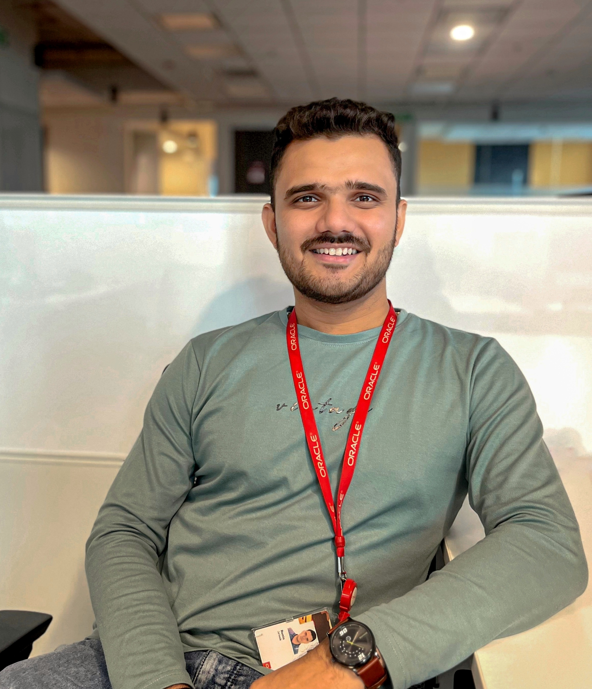
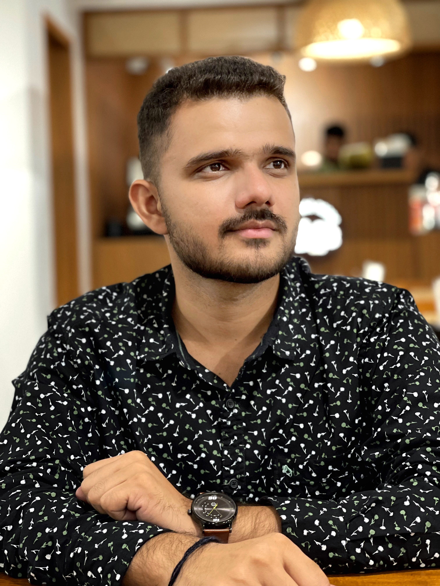
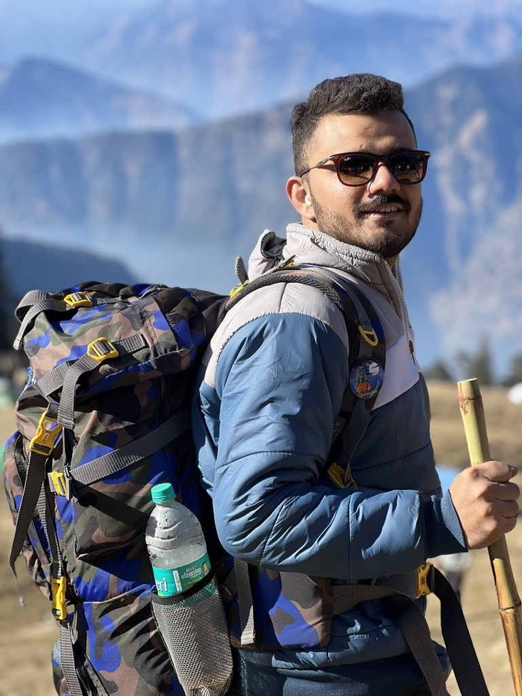

I am a passionate senior software developer at Oracle (IC2) with a love for technology and innovation. Beyond work, I have a vibrant, adventurous personality. I enjoy traveling, immersing myself in different cultures, and expanding my horizons. Photography is my creative outlet, capturing the beauty of nature and editing pictures to create stunning visuals. Additionally, I find solace and balance through practicing yoga, nurturing both my mind and body. It brings me inspiration and harmony in my personal and professional journey.

A touch of class in this captured frame,
Exuding elegance, setting hearts aflame.
A glimpse of sophistication, my essence proclaimed.

Confidence exudes from my professional attire,
A shirt donned with style, ambition set afire.
With a sharp look, I'm poised to conquer and aspire.

In the wild, I find my truest calling,
Hiking through nature, exhilaration enthralling.
Adventure in my veins, exploration never stalling.
Serene and devout, at Ganga's sacred shore,
In Rishikesh, my soul finds solace and more.
In prayer, I seek divine guidance, forever I adore.